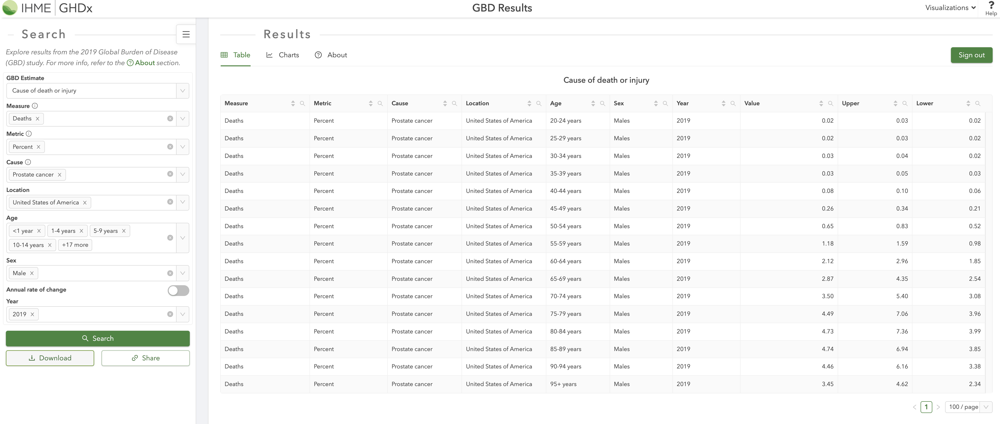

Code
library(knitr)
# knit('MarkovDA.qmd', tangle=TRUE)
# source('MarkovDA.R')
source(purl("MarkovDA.qmd", output = tempfile()))
options("scipen"=1000, "digits"=2)Based on the last tutorial of Markov Model in R, we will add background mortality using a cause-deleted life table.
library(knitr)
# knit('MarkovDA.qmd', tangle=TRUE)
# source('MarkovDA.R')
source(purl("MarkovDA.qmd", output = tempfile()))
options("scipen"=1000, "digits"=2)https://www.cdc.gov/nchs/products/life_tables.htm [CDC website]
We are using United States Life Tables(2020) – remember to distinguish the life tables for the male and the female.
Male: https://ftp.cdc.gov/pub/Health_Statistics/NCHS/Publications/NVSR/71-01/Table02.xlsx
Female: https://ftp.cdc.gov/pub/Health_Statistics/NCHS/Publications/NVSR/71-01/Table03.xlsx
| Name | Description |
|---|---|
| qx | Probability of dying between ages x and x + 1 |
| lx | Number surviving to age x |
| dx | Number dying between ages x and x + 1 |
| Lx | Person-years lived between ages x and x + 1 |
| Tx | Total number of person-years lived above age x |
| ex | Expectation of life at age x |
input_file = normalizePath(here("exercise/markov_exercise_phd.xlsx"))
life_table_raw = readxl::read_xlsx(input_file,sheet="Life Table - Male",col_types ="numeric")[-1,]
names(life_table_raw) = c("Age", "qx", "lx", "dx", "Lx", "Tx", "ex")Here we set all our patients are initially 45-yr men with the prostate cancer.
https://vizhub.healthdata.org/gbd-results/[GBD query tool]
GBD results provide the % of deaths due to a specific cause by age (every 5 years) and sex groups.
Using filters like:


cause_death_m = read.csv("exercise/GBD_2019_prostate.csv") %>%
select(age,val,upper,lower)
cause_death_m1 = cause_death_m %>% filter(str_detect(age, "<")) %>%
mutate(start = 0,
reptimes = as.numeric(str_sub(age,
unlist(gregexpr('<', age))[1]+1,
unlist(gregexpr(' ', age))[1]-1)),
end = start + reptimes - 1)
cause_death_m2 = cause_death_m %>%
filter(str_detect(age,"-") & !str_detect(age, " ")) %>%
rowwise %>%
mutate(start = as.numeric(str_sub(age,1,unlist(gregexpr('-', age))[1]-1)),
end = as.numeric(str_sub(age,unlist(gregexpr('-', age))[1]+1,str_length(age))),
reptimes = end - start + 1)
cause_death_m3 = cause_death_m %>% filter(str_detect(age,"-") & str_detect(age, " ")) %>%
rowwise %>%
mutate(start = as.numeric(str_sub(age,1,unlist(gregexpr('-', age))[1]-1)),
end = as.numeric(str_sub(age,unlist(gregexpr('-', age))[1]+1,unlist(gregexpr(' ', age))[1]-1)),
reptimes = end - start + 1)
cause_death_male = rbind(
as.data.frame(lapply(cause_death_m1, rep, cause_death_m1$reptimes)) %>%
group_by(age) %>%
mutate(Age = start - 1 + 1:n()) %>%
ungroup(),
as.data.frame(lapply(cause_death_m2, rep, cause_death_m2$reptimes)) %>%
group_by(age) %>%
mutate(Age = start - 1 + 1:n()) %>%
ungroup(),
as.data.frame(lapply(cause_death_m3, rep, cause_death_m3$reptimes)) %>%
group_by(age) %>%
mutate(Age = start - 1 + 1:n()) %>%
ungroup()) %>%
arrange(Age) %>%
select(Age, val, upper, lower)
maxage = min(max(life_table_raw$Age), max(cause_death_male$Age))
minage_cause = min(cause_death_male$Age)
mlt2020 = life_table_raw[(minage_cause+1):(maxage+1),]
## dx
mlt2020_nonCause = rbind(life_table_raw[1:minage_cause, c("Age","dx")],
data.frame(Age = minage_cause:maxage,
dx = mlt2020[, "dx"] * (1-cause_death_male[, "val"])),
life_table_raw[(maxage+2):nrow(life_table_raw),c("Age","dx")])
mlt2020_cause = data.frame(Age = minage_cause:maxage,
dx = mlt2020[, "dx"] * cause_death_male[, "val"])
# sum(mlt2020_cause$dx) + sum(mlt2020_nonCause$dx)
# back dx to qx
for (i in 1:nrow(mlt2020_nonCause)){
mlt2020_nonCause[i, "qx"] = mlt2020_nonCause[i, "dx"] / sum(mlt2020_nonCause[i:nrow(mlt2020_nonCause), "dx"])
}# here use the cause-deleted life table
m_M_phd = death_background = death_cancer = list()
# setting
start_age = 45
for (i in 1:n_strategies) {
#initialization
death_cancer[[v_names_str[i]]] = c(0)
death_background[[v_names_str[i]]] = c(0)
m_M_phd[[v_names_str[i]]] = matrix(0, nrow = params_sc$n_cycles+1, ncol = v_n_states, dimnames = list(NULL, v_names_states))
m_M_phd[[v_names_str[i]]][1,] = c(params_sc$nPop, rep(0,times=5))
for (cycle in 1:params_sc$n_cycles) {
m_M_phd[[v_names_str[i]]][cycle+1,] = m_M_phd[[v_names_str[i]]][cycle,] %*% m_P[[v_names_str[i]]] * (1-mlt2020_nonCause[(cycle + start_age),"qx"] %>% pull())
death_background[[v_names_str[i]]][cycle+1] = sum(m_M_phd[[v_names_str[i]]][cycle,1:5]) * (mlt2020_nonCause[(cycle + start_age),"qx"] %>% pull()) + death_background[[v_names_str[i]]][cycle]
death_cancer[[v_names_str[i]]][cycle+1] = round(params_sc$nPop - sum(m_M_phd[[v_names_str[i]]][cycle+1,1:5]) - death_background[[v_names_str[i]]][cycle+1],2)
}
m_M_phd[[v_names_str[i]]] = cbind(m_M_phd[[v_names_str[i]]][,1:5], matrix(death_cancer[[v_names_str[i]]]), matrix(death_background[[v_names_str[i]]]))
colnames(m_M_phd[[v_names_str[i]]])[6:7] = c("Death_Cancer", "Death_Background")
}
m_M_phd$quo
Healthy Stage1 Stage2 Stage3 Remission Death_Cancer Death_Background
[1,] 1000 0 0 0 0 0.0 0.0
[2,] 916 50 20 10 0 0.0 4.4
[3,] 839 79 36 17 16 4.5 9.0
[4,] 768 96 47 22 41 12.1 14.0
[5,] 703 107 56 26 68 22.0 19.2
[6,] 643 113 63 28 95 33.5 24.7
[7,] 588 118 68 30 121 46.1 30.5
[8,] 537 121 71 31 145 59.4 36.7
[9,] 490 122 74 31 166 73.1 43.2
[10,] 448 123 76 31 185 87.0 50.2
[11,] 408 124 77 31 201 101.0 57.6
[12,] 372 124 77 31 215 114.9 65.5
[13,] 339 123 78 30 227 128.6 73.8
[14,] 308 122 78 30 237 142.2 82.5
[15,] 280 121 77 29 245 155.5 91.8
[16,] 255 119 77 29 250 168.6 101.5
[17,] 231 118 76 28 254 181.3 111.6
[18,] 209 115 75 27 257 193.8 122.1
[19,] 189 113 74 27 258 205.9 133.1
[20,] 171 111 72 26 258 217.6 144.4
[21,] 155 108 71 25 257 229.0 156.0
[22,] 140 105 69 24 254 240.1 167.7
[23,] 126 102 67 23 251 250.7 179.9
[24,] 113 99 65 23 247 261.0 192.3
[25,] 102 96 63 22 242 270.9 205.1
[26,] 91 92 61 21 236 280.4 218.2
[27,] 82 89 59 20 230 289.5 231.5
[28,] 73 85 57 19 223 298.2 245.1
[29,] 65 82 54 18 215 306.6 259.1
[30,] 58 78 52 17 207 314.5 273.3
[31,] 51 74 49 16 198 322.0 288.4
$trtA
Healthy Stage1 Stage2 Stage3 Remission Death_Cancer Death_Background
[1,] 1000 0 0 0.0 0 0.0 0.0
[2,] 916 50 20 10.0 0 0.0 4.4
[3,] 839 79 36 17.0 16 4.5 9.0
[4,] 768 95 47 22.1 42 12.1 14.0
[5,] 703 103 54 25.6 74 22.0 19.2
[6,] 643 105 58 27.8 107 33.5 24.7
[7,] 588 105 61 28.9 141 45.9 30.5
[8,] 537 103 61 29.2 174 58.8 36.7
[9,] 490 100 60 28.9 206 71.9 43.2
[10,] 448 96 59 28.2 235 84.8 50.2
[11,] 408 91 57 27.2 261 97.4 57.7
[12,] 372 87 55 26.0 285 109.5 65.6
[13,] 339 83 53 24.7 306 121.1 73.9
[14,] 308 79 50 23.4 324 132.1 82.7
[15,] 280 75 48 22.1 340 142.5 92.1
[16,] 255 71 46 20.8 354 152.3 102.0
[17,] 231 67 44 19.6 365 161.6 112.3
[18,] 209 64 42 18.4 374 170.2 123.1
[19,] 189 60 39 17.2 381 178.3 134.4
[20,] 171 57 38 16.1 385 186.0 146.2
[21,] 155 54 36 15.1 389 193.1 158.3
[22,] 140 52 34 14.2 390 199.8 170.7
[23,] 126 49 32 13.3 390 206.0 183.6
[24,] 113 47 31 12.5 388 211.9 197.0
[25,] 102 44 29 11.7 385 217.4 210.8
[26,] 91 42 28 10.9 381 222.5 225.1
[27,] 82 40 26 10.3 375 227.3 239.8
[28,] 73 38 25 9.6 368 231.8 254.9
[29,] 65 36 24 9.0 360 236.0 270.6
[30,] 58 34 22 8.4 351 239.9 286.7
[31,] 51 32 21 7.8 340 243.5 304.1
$trtB
Healthy Stage1 Stage2 Stage3 Remission Death_Cancer Death_Background
[1,] 1000 0 0 0 0 0.0 0.0
[2,] 916 50 20 10 0 0.0 4.4
[3,] 839 79 36 17 16 4.5 9.0
[4,] 768 96 47 22 41 12.1 14.0
[5,] 703 106 55 26 70 22.0 19.2
[6,] 643 112 61 28 99 33.5 24.7
[7,] 588 115 64 29 127 46.0 30.5
[8,] 537 117 67 30 154 59.1 36.7
[9,] 490 117 68 30 178 72.5 43.2
[10,] 448 118 69 30 200 86.0 50.2
[11,] 408 117 69 30 219 99.4 57.6
[12,] 372 116 69 29 236 112.5 65.5
[13,] 339 115 68 28 250 125.4 73.9
[14,] 308 114 67 27 262 137.9 82.6
[15,] 280 113 66 27 272 150.1 91.9
[16,] 255 111 65 26 280 161.9 101.7
[17,] 231 109 64 25 286 173.3 111.9
[18,] 209 107 63 24 290 184.3 122.6
[19,] 189 105 61 23 293 194.9 133.7
[20,] 171 102 60 22 294 205.2 145.1
[21,] 155 100 59 21 294 215.0 156.9
[22,] 140 97 57 21 292 224.5 168.9
[23,] 126 94 55 20 290 233.6 181.4
[24,] 113 91 54 19 286 242.4 194.2
[25,] 102 89 52 18 281 250.7 207.4
[26,] 91 86 50 17 276 258.8 220.9
[27,] 82 83 48 17 270 266.4 234.7
[28,] 73 79 46 16 263 273.7 248.9
[29,] 65 76 45 15 255 280.7 263.4
[30,] 58 73 43 14 246 287.3 278.4
[31,] 51 69 41 14 237 293.5 294.3
$trtC
Healthy Stage1 Stage2 Stage3 Remission Death_Cancer Death_Background
[1,] 1000 0 0 0 0 0.0 0.0
[2,] 916 50 20 10 0 0.0 4.4
[3,] 839 79 36 17 16 4.5 9.0
[4,] 768 95 47 22 42 12.1 14.0
[5,] 703 104 55 26 72 22.0 19.2
[6,] 643 109 60 28 103 33.5 24.7
[7,] 588 110 63 29 134 46.0 30.5
[8,] 537 110 64 30 164 59.0 36.7
[9,] 490 109 64 30 191 72.2 43.2
[10,] 448 107 64 29 216 85.4 50.2
[11,] 408 105 63 28 239 98.4 57.7
[12,] 372 103 62 28 258 111.1 65.6
[13,] 339 101 61 27 276 123.3 73.9
[14,] 308 98 60 26 291 135.2 82.7
[15,] 280 96 58 25 303 146.5 92.0
[16,] 255 93 57 23 313 157.4 101.8
[17,] 231 90 55 22 321 167.8 112.1
[18,] 209 88 53 21 327 177.8 122.8
[19,] 189 85 52 21 332 187.3 134.0
[20,] 171 83 50 20 334 196.4 145.6
[21,] 155 80 49 19 335 205.0 157.6
[22,] 140 77 47 18 335 213.2 169.7
[23,] 126 75 45 17 333 221.1 182.4
[24,] 113 72 44 16 330 228.6 195.4
[25,] 102 70 42 15 326 235.7 208.9
[26,] 91 67 41 15 321 242.5 222.8
[27,] 82 64 39 14 315 248.9 237.0
[28,] 73 62 37 13 308 255.0 251.6
[29,] 65 59 36 13 300 260.8 266.7
[30,] 58 57 34 12 291 266.3 282.1
[31,] 51 54 32 11 281 271.4 298.7m_M_simplified =
m_M_phd %>%
map(~ {
for (i in 1:nrow(.x)){
.x[i,6] = .x[i,"Death_Cancer"] + .x[i,"Death_Background"]
}
.x = .x[,1:6]
colnames(.x)[6] = "Death"
rownames(.x) = 0:(params_sc$n_cycles)
.x
}
)
calculate_icers(
cost = get_ce(l_m_M = m_M_simplified, payoffs = build_payoffs(params_sc), params_sc)$cost,
effect = get_ce(l_m_M = m_M_simplified, payoffs = build_payoffs(params_sc), params_sc)$qaly,
strategies = v_names_str) Strategy Cost Effect Inc_Cost Inc_Effect ICER Status
quo quo 25104025 13832 NA NA NA ND
trtA trtA 66356870 14348 41252844 516 79971 ND
trtB trtB 50429119 14018 NA NA NA ED
trtC trtC 73553288 14166 NA NA NA D